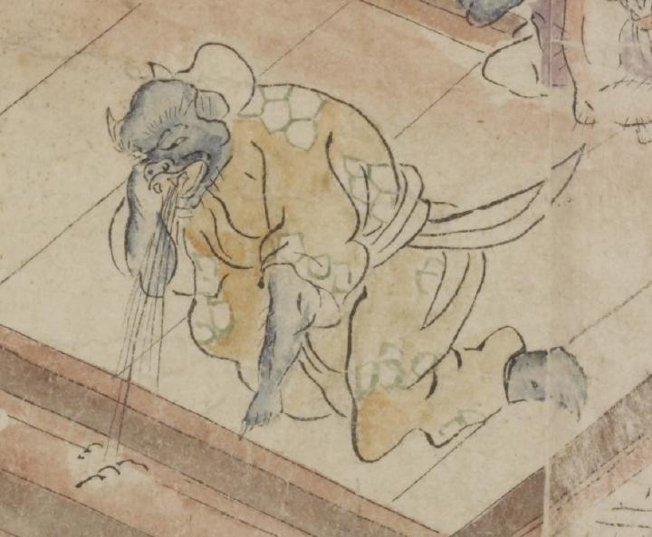

青い肌の獣のような顔をした鬼。頭は禿げ、頭部に2本白い角が生えているように見える。鼻は潰れて、開いた口の上顎に牙が生え、牛か豚のように見える。緑色の柄が入った茶色の着物を着て、跪き、左手を床について、吐いている。
著作者：坂本弥一郎徳定／出典：親書誌：U426_nichibunken_0080：伊吹山酒呑童子絵巻；イブキヤマシュテンドウジエマキ／日付：2007／資源識別子：U426_nichibunken_0080_0008_0005
Copyright (c)2010- International Research Center for Japanese Studies, Kyoto, Japan. All rights reserved.